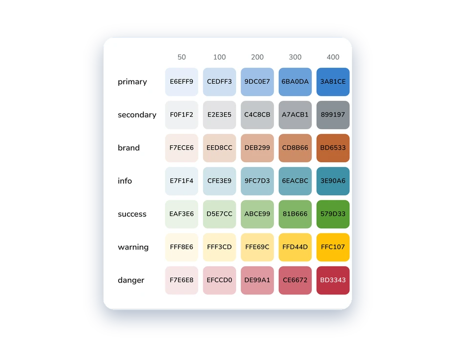
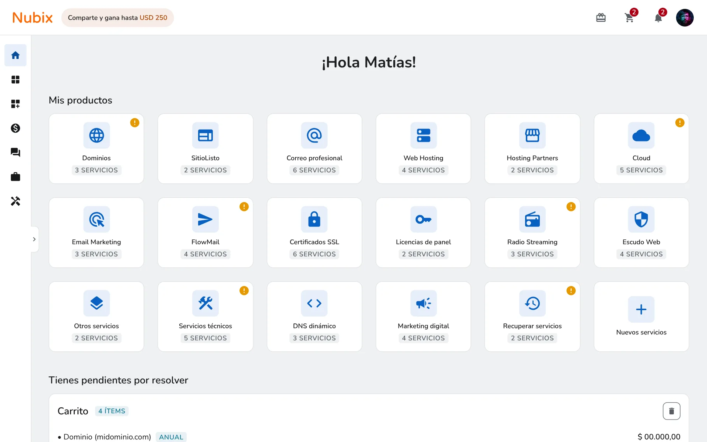
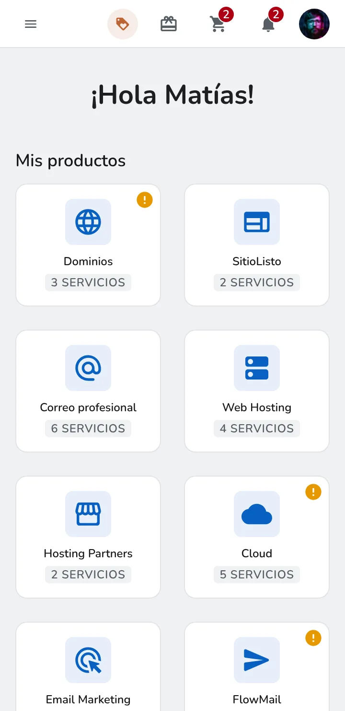
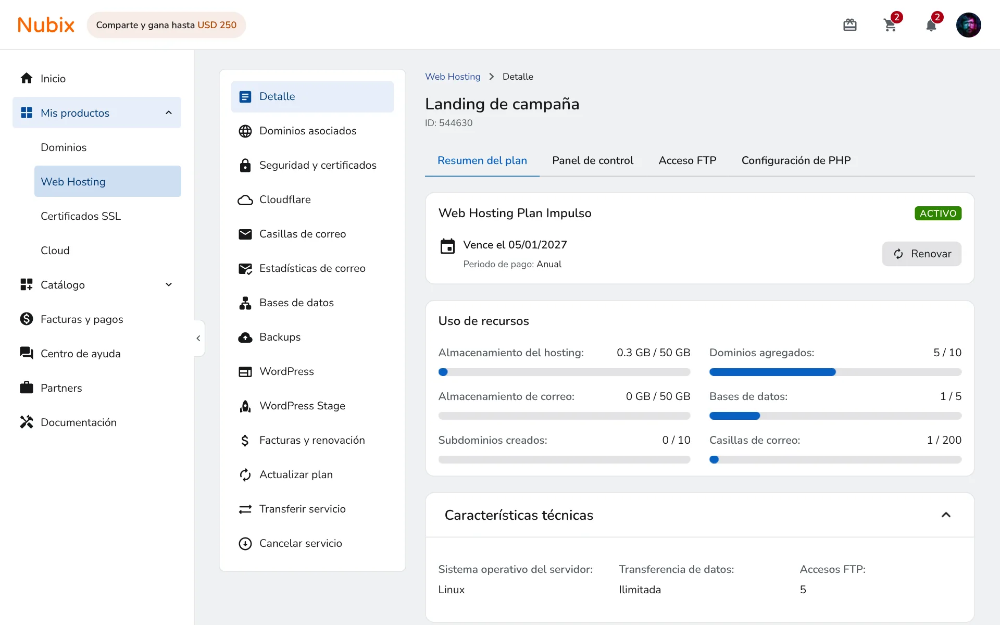
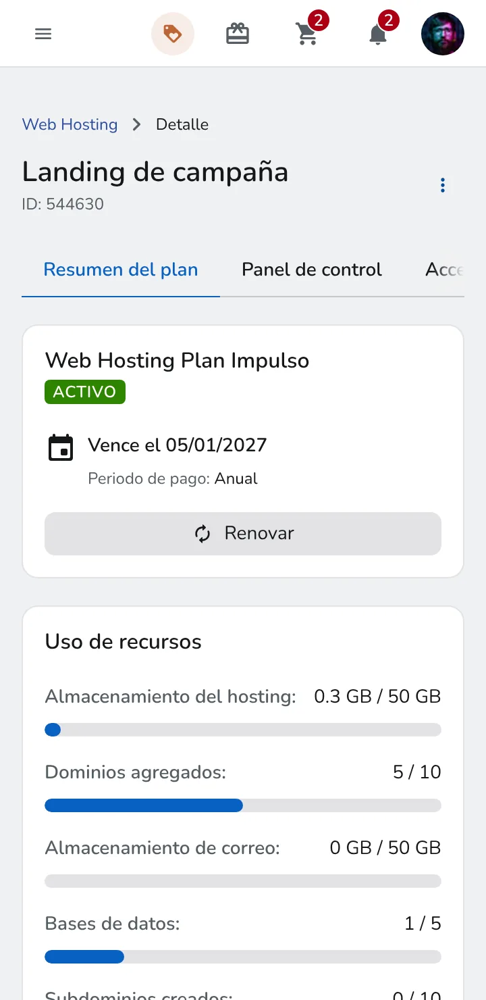
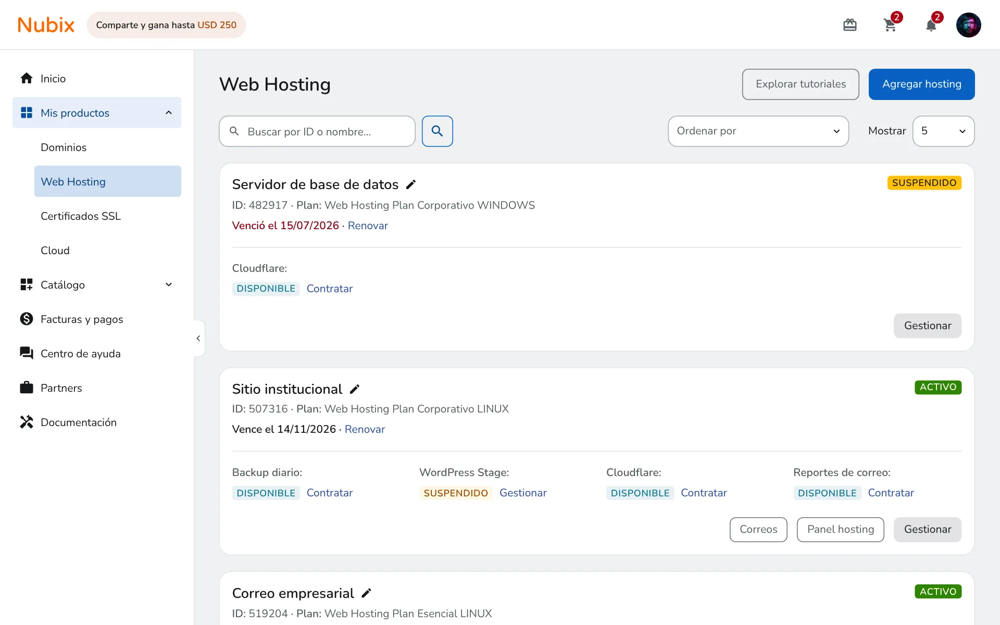
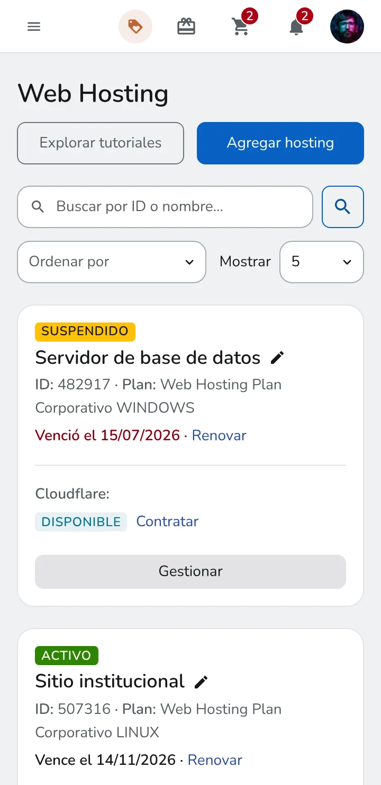

Nubix
De decisiones sueltas a un sistema de diseño
Audité el panel, medí sus inconsistencias en el código y las contrasté con un benchmark y criterios WCAG para proponer un sistema de tokens y componentes.

Por un acuerdo de confidencialidad no menciono el nombre real de la empresa ni del producto. Las capturas son adaptaciones de lo que existe en producción.
En pocas palabras
El panel de clientes gestiona hosting, dominios, pagos y facturación para miles de usuarios, y su interfaz se fue armando proyecto por proyecto, sin un sistema de diseño detrás. Cuando lo audité encontré el problema real: no había una sola fuente de verdad. Convivían headers distintos en la misma app, el logo sacaba al usuario del producto y una misma tarjeta mezclaba datos que no se leen igual.
El pedido tenía dos partes: modernizar la estética, que vivía en un radio de borde plano de 4px sin jerarquía visual, y acercar el producto a la identidad de marketing, con el azul como color principal. Una parte ya está en producción: cambiaron los radios de borde. El resto, con la paleta de color y la nomenclatura incluidas, quedó resuelto en esta propuesta.
Este caso muestra sobre todo la corrección de inconsistencias y problemas de la interfaz. El sistema de diseño es más amplio y está completo: se pensó para Bootstrap 5.2 y reúne muchas más piezas, que están en el catálogo y en el handoff.
Qué hice yo
Auditar el producto real, contar los patrones en el código, contrastarlos con heurísticas, WCAG y un benchmark, y proponer el sistema. Lo hice por iniciativa propia: el UI-Kit nunca tuvo fecha de inicio ni de cierre, y Nubix es el trabajo de sistematizar decisiones que se habían tomado una por una.
Con inteligencia artificial
Usé inteligencia artificial en el relevamiento del código, el armado de componentes, la tokenización, el prototipado en código y los arreglos de usabilidad, entre otras tareas. Todo fue validado por mí.
Con quién trabajé
- 1 diseñador (yo)
- 4 desarrolladores
- Líder de desarrollo
- Product Owner
- QA
La auditoría en cuatro cifras
-
0,6%
Color de marca en los botones
Aparece seis veces entre más de 1000 botones relevados.
Identidad visual -
47,7%
Verde y rojo como acción
Casi la mitad de los botones usa un color pensado para éxito o error como llamado a la acción.
Identidad visual -
7
Piezas distintas hacen de header
Barra mobile, barra oscura, breadcrumb, header de lista, header de Cloud, título de sección y menú contextual, cada una con su color y su comportamiento.
Headers -
3
Lugares con el logo
El logo está en tres lugares de la app y te lleva al sitio de marketing, en vez de volver al inicio del panel.
Headers
Cifras de un relevamiento propio del código y de la interfaz en producción.
Hallazgo 1 de 5
Identidad visual, un sistema a medias
Color, tipografía, sombras e íconos tienen el mismo problema: valores definidos a mano, sin tokens que los conecten. Se ve más claro en los botones: medí el código y el color de marca aparece en menos del 1 % de los botones, mientras que un color pensado para éxito o error concentra casi la mitad de los llamados a la acción. Además, el naranja de marca con texto blanco no llega al contraste mínimo de lectura, ni el azul de los botones con forma de link (3,98:1), y muchos de esos links hacían de botón sin el tamaño mínimo para tocarlos.
Un benchmark de cuatro productos del sector (Cloudflare, DigitalOcean, Hostinger y GoDaddy) mostró cómo lo resuelven otros: en Cloudflare y GoDaddy la marca queda para acentos puntuales, y en DigitalOcean y Hostinger marca y acción coinciden. Lo que comparten los cuatro es con qué operan, azul, violeta o negro. Ninguno usa un color de estado ni un naranja como acción primaria.
Para qué se usan los botones
Relevamiento de más de 1000 botones del producto. El color de acción por defecto terminó siendo el verde de estado.
Links que hacen de botón
Análisis del HTML de la rama development, sin ejecutar la app. Cifras aproximadas: la clasificación se apoya en el nombre del handler.
376
Elementos clicables que no son botón
270 son enlaces, 42 son bloques genéricos, 31 íconos y 15 filas de tabla.
~230
Links que ejecutan una acción
De 273 enlaces con click, la mayoría no navega: 80 abren o cierran un modal. Es un enlace vacío al que se le cancela la navegación.
21
Cierres hechos con link e ícono
19 quedan fuera del orden del teclado y 20 se anuncian como «Close», en inglés. En otros 58 lugares el cierre sí es un botón.
31
Íconos clicables sueltos
Sin foco de teclado ni nombre accesible. 18 son el ojo para mostrar la contraseña.
Criterios de WCAG: teclado (2.1.1), nombre y función (4.1.2) y propósito del enlace (2.4.4). Es una lectura a partir del código.
Benchmark
Cuatro productos de gestión e infraestructura, mirando color de acción, color de marca, radio y lenguaje visual.
-
Cloudflare
Marca y acción distintas
- Acción
- Azul
- Marca
- Naranja (acento puntual, no es color de acción)
- Radio
- Moderado, consistente en todos los componentes
- Estilo
- Minimalista, casi sin ilustraciones en pantallas funcionales
-
DigitalOcean
Marca y acción coinciden
- Acción
- Azul
- Marca
- Azul (marca y acción coinciden)
- Radio
- Moderado, consistente
- Estilo
- Utilitario, pero con ilustraciones y mascota en pantallas de producto
-
Hostinger
Coinciden en las pantallas de producto
- Acción
- Violeta en pantallas de producto
Negro en pantallas de venta - Marca
- Violeta
- Radio
- Moderado a alto
- Estilo
- Mixto: minimalista en producto, muy ilustrado en venta
-
GoDaddy
Marca y acción distintas
- Acción
- Negro
- Marca
- Teal (acento puntual)
- Radio
- Chico y conservador (más cerca del 4px legado del producto que de un radio “generoso”)
- Estilo
- Muy minimalista, sin ilustraciones
La propuesta
Una paleta azul calibrada. Es el mismo azul que ya pedían para acercarse a la marca, ajustado para operar como color de acción y menos vívido que el de marketing, y ahí converge todo lo que hoy resuelve el color semántico por defecto.
Los mismos botones, antes y después
«Del total» es el porcentaje de los más de 1000 botones relevados. La columna «Con el sistema» es una propuesta, no una medición.
-
Hoy
Semánticos como CTA
Verde de éxito (unos 450) y rojo de error (unos 35). El verde terminó haciendo de primario.
Del total47,7%
Con el sistemaSolid primary La acción principal pasa a ser del color primario, en lugar del verde.
Colores semánticos Éxito, advertencia, error e información quedan para comunicar estado y para acciones destructivas.
-
Hoy
Bajo énfasis (links y cierres)
355 elementos: botones con forma de link, en azul #007bff (3,98:1 sobre blanco), y cierres con ícono. Muchos eran enlaces con función de botón.
Del total34,8%
Con el sistemaBotones ghost Sin borde, como un link, pero con tamaño de objetivo accesible y con énfasis al interactuar. Sirven para texto, ícono o ambos.
-
Hoy
Neutros y secundarios
Gris.
Del total15,8%
Con el sistemaOutline secondary
-
Hoy
Terceros y contextuales
Facebook y Google. El botón de Facebook usa colores propios del botón de Google.
Del total1,2%
Con el sistemaSin cambio Quedan como están.
-
Hoy
Marca y primario
El naranja #ff8431, que debía ser el primario. Con el texto blanco que le forzaron a los botones da 2,4:1.
Del total0,6%
Con el sistemaSolid brand Con el naranja calibrado (#AC3E00, contraste 6,1:1).
Roles semánticos
Cada rol apunta a un paso de la escala. El contraste está calculado sobre blanco con la fórmula de WCAG 2.x.
Acción principal
action-primary-default · #0961C2
6,0:1AAAcción principal · hover
action-primary-hover · #074E9B
8,2:1AAAAcción principal · active
action-primary-active · #053A74
11,3:1AAAAcción de marca
action-brand-default · #AC3E00
6,1:1AAEnlace
link-color · #2B4C9E
8,0:1AAATexto
body-color · #161719
17,9:1AAATexto secundario
text-muted · #565E64
6,6:1AAÉxito
text-success · #246A00
6,7:1AAAdvertencia
text-warning · #9B4600
6,4:1AAPeligro
text-danger · #8A0010
10,1:1AAAInformación
text-info · #0B5D73
7,4:1AAANaranja de marketing
brand-vivid · #FF6600
2,9:1no cumpleSolo identidad. Nunca botón ni texto.
Escalas primitivas 50 a 950
Siete familias con once pasos. El 500 es el valor base y lleva doble marco. El naranja de marketing quedó fuera de la escala.
Primary
- 50#E6EFF91,2:1no cumple
- 100#CEDFF31,4:1no cumple
- 200#9DC0E71,9:1no cumple
- 300#6BA0DA2,7:1no cumple
- 400#3A81CE4,0:1AA 18+
- 500#0961C26,0:1AA
- 600#074E9B8,2:1AAA
- 700#053A7411,3:1AAA
- 800#04274E14,9:1AAA
- 900#02132718,7:1AAA
- 950#010C1719,7:1AAA
Brand
- 50#F7ECE61,2:1no cumple
- 100#EED8CC1,4:1no cumple
- 200#DEB2991,9:1no cumple
- 300#CD8B662,8:1no cumple
- 400#BD65334,1:1AA 18+
- 500#AC3E006,1:1AA
- 600#8A32008,3:1AAA
- 700#67250011,4:1AAA
- 800#45190015,1:1AAA
- 900#220C0018,7:1AAA
- 950#15070019,8:1AAA
Info
- 50#E7F1F41,1:1no cumple
- 100#CFE3E91,3:1no cumple
- 200#9FC7D31,8:1no cumple
- 300#6EACBC2,5:1no cumple
- 400#3E90A63,7:1AA 18+
- 500#0E74905,4:1AA
- 600#0B5D737,4:1AAA
- 700#08465610,4:1AAA
- 800#062E3A14,4:1AAA
- 900#03171D18,4:1AAA
- 950#020E1119,6:1AAA
Success
- 50#EAF3E61,1:1no cumple
- 100#D5E7CC1,3:1no cumple
- 200#ABCE991,7:1no cumple
- 300#81B6662,4:1no cumple
- 400#579D333,3:1AA 18+
- 500#2D85004,7:1AA
- 600#246A006,7:1AA
- 700#1B50009,6:1AAA
- 800#12350013,7:1AAA
- 900#091B0018,0:1AAA
- 950#05100019,4:1AAA
Warning
- 50#FFF8E61,1:1no cumple
- 100#FFF3CD1,1:1no cumple
- 200#FFE69C1,2:1no cumple
- 300#FFD44D1,4:1no cumple
- 400#FFC1071,6:1no cumple
- 500#E698002,4:1no cumple
- 600#C46C003,8:1AA 18+
- 700#9B46006,4:1AA
- 800#6B2C0010,6:1AAA
- 900#4A1C0014,4:1AAA
- 950#2A100017,9:1AAA
Danger
- 50#F7E6E81,2:1no cumple
- 100#EFCCD01,5:1no cumple
- 200#DE99A12,3:1no cumple
- 300#CE66723,6:1AA 18+
- 400#BD33435,6:1AA
- 500#AD00147,5:1AAA
- 600#8A001010,1:1AAA
- 700#68000C13,2:1AAA
- 800#45000816,7:1AAA
- 900#23000419,6:1AAA
- 950#15000220,3:1AAA
Secondary
- 50#F0F1F21,1:1no cumple
- 100#E2E3E51,3:1no cumple
- 200#C4C8CB1,7:1no cumple
- 300#A7ACB12,3:1no cumple
- 400#8991973,2:1AA 18+
- 500#6C757D4,7:1AA
- 600#565E646,6:1AA
- 700#41464B9,5:1AAA
- 800#2B2F3213,5:1AAA
- 900#16171917,9:1AAA
- 950#0D0E0F19,3:1AAA
Del radio único a una escala por rol
Hoy botón, card, alerta e input comparten 4 px, así que nada distingue una superficie de un control. Solo los badges llevaban 8 px y, por su poca altura, se veían casi como píldoras. La propuesta asigna un paso de la escala a cada rol. Cambiá la vista para ver los mismos componentes del catálogo con cada criterio.
El componente completo
Tres estilos, cuatro colores, tres tamaños y cinco estados. Armá una combinación y mirá sus valores exactos: medidas, colores del catálogo y contraste calculado sobre lo que se está viendo.
La familia, con sus estados reales
Pasá el mouse o hacé clic: las muestras responden como los botones del catálogo. En secondary, el solid es gris claro con texto oscuro. El catálogo suma un quinto color, light, para fondos oscuros.
Y también en el catálogo
Badges: de 9,7 px sin contraste a una familia verificada
El badge viejo tenía 9,7 px de texto, radio de 8 px (por su poca altura, se veía casi como píldora) y colores heredados de Bootstrap. En el catálogo pasa a 4 px de radio, nunca baja de 12 px de texto y cada color tiene su par solid y light con el contraste verificado.
328
Badges en unos 131 templates
Sin tokens por estado: el color sale de las utilidades de Bootstrap, y el celeste de “info” sirve para casi todo.
6
Tamaños de texto distintos
De 9,7 px en el global a 14 px. El tamaño base, con mayúsculas, comunica estados importantes.
5
Formas de anular las mayúsculas
Estilo en línea, clases, SCSS y reglas forzadas. Hay «ACTIVO» y «Activo» en el mismo flujo.
2
Sistemas visuales a la vez
Sólido para estados y suave para etiquetas. En un mismo componente, «vencido» es sólido y los días restantes, suaves.
Antes y ahora, color por color
Contraste del texto sobre su fondo, calculado con la fórmula de WCAG 2.x a partir de los colores del código. En el sólido viejo el texto era blanco sobre colores claros. En el suave, el texto de color caía sobre un fondo (un gris casi blanco) que casi no se distingue del de la app: 1,05:1 con el blanco.
Sólido, texto blanco
-
AntesSuspendido1,6:1 ✕ · 44 usosAhoraSuspendidoWarning solid · 11,0:1 AAA
-
AntesNuevo2,6:1 ✕ · 48 usosAhoraNuevoInfo solid · 5,4:1 AA
-
AntesOperador2,4:1 ✕ · 5 usosAhoraOperadorBrand solid · 6,1:1 AA
Suave, texto de color sobre #f8f9fa
-
AntesPor vencer1,5:1 ✕ · 7 usosAhoraPor vencerWarning light · 6,1:1 AA
-
AntesInformativo2,4:1 ✕ · 5 usosAhoraInformativoInfo light · 4,7:1 AA
-
AntesAhorrás 20%4,4:1 AA 18+ · 28 usosAhoraAhorrás 20%Success light · 5,9:1 AA
-
AntesVence hoy4,3:1 AA 18+ · 7 usosAhoraVence hoyDanger light · 6,3:1 AA
-
AntesInactivo4,4:1 AA 18+ · 4 usosAhoraInactivoSecondary light · 5,8:1 AA
La familia completa
Siete colores en dos estilos y dos tamaños: 18 px de alto (24 en la variante grande), texto en mayúsculas. Debajo de cada par va el contraste del texto sobre su fondo. Todos pasan AA.
-
Primary
ActivoActivo6,0:1 AAActivoActivo5,2:1 AA -
Brand
ActivoActivo6,1:1 AAActivoActivo5,3:1 AA -
Secondary
ActivoActivo4,7:1 AAActivoActivo5,8:1 AA -
Success
ActivoActivo4,7:1 AAActivoActivo5,9:1 AA -
Warning
ActivoActivo11,0:1 AAAActivoActivo6,1:1 AA -
Danger
ActivoActivo7,5:1 AAAActivoActivo6,3:1 AA -
Info
ActivoActivo5,4:1 AAActivoActivo4,7:1 AA
Contadores
Circulares, de 18 o 24 px, en danger y primary. Hoy están definidos dos veces, en el sidebar y en las notificaciones. El del header, sobre la campana, es el de danger.
Hallazgo 2 de 5
Tablas que se cortan en mobile y acciones difíciles de tocar
El producto tiene 74 tablas en 57 pantallas y casi ninguna se pensó para mobile. La solución dominante es el scroll horizontal: 67 están dentro de un contenedor que se desplaza y 7 ni siquiera lo tienen, así que pueden desbordar la página entera. Ocultar columnas según el ancho casi no se usa (24 celdas en todo el producto). A 360 px, la tabla de la zona DNS mide 527 px en un contenedor de 288: TTL, prioridad y las acciones quedan fuera de la vista, sin una sombra ni un indicador que avise que hay más.
La acción de cada fila es lo primero que sale de pantalla, porque la columna de acciones es la última. Y cuando se ve, son íconos de 18 px dentro de un link, con un área de toque de 20 × 23 px. 30 tablas tienen acciones y resuelven lo mismo de tres maneras distintas, con dos tamaños de ícono. El orden por columna casi no existe: solo 3 encabezados lo ofrecen.
Las tablas, en cifras
Análisis del HTML de la rama development. Los anchos y tamaños salen del render de una réplica a 360 px. Para las columnas se cuenta la primera fila de datos de cada tabla (73 de las 74).
74
Tablas en 57 pantallas
67 resuelven mobile con scroll horizontal dentro de un contenedor. Las otras 7 no tienen ninguno y pueden desbordar la página.
24
Celdas que cambian según el ancho
Son todas las que ocultan una columna por breakpoint en esas 57 pantallas. Reordenar la información casi no se usa: se deja que scrollee.
6
Columnas como máximo
El 74 % de las tablas tiene entre 2 y 4. Todos sus datos caben en una tarjeta como pares etiqueta-valor.
30
Tablas con acciones en la última celda
Es la columna que primero sale de pantalla. Se arma con botón (12 tablas), ancla y botón (7), ancla con ícono (6) o solo ancla (5).
2
Tamaños de ícono en las acciones
18 px en el 83 % y 24 px en el 17 % (los que no declaran tamaño).
3
Encabezados que ordenan por columna
En todas las tablas del producto. Cada lista define sus opciones de orden por su cuenta.
La misma tabla en un celular de 360 px
A la izquierda, una réplica del marcado y los estilos del producto con datos de ejemplo; deslizala para ver lo que queda afuera. A la derecha, la tabla del sistema: en un contenedor de menos de 700 px cada fila pasa a ser una tarjeta. Las dos se pueden usar.
Hoy · scroll horizontal
Zona DNS
| Tipo | Nombre | Contenido | TTL | Prioridad | Acciones |
|---|---|---|---|---|---|
| A | example.com | 203.0.113.10 | 3600 | - | |
| CNAME | www.example.com | example.com | 3600 | - | |
| MX | example.com | mail.example.com | 3600 | 10 | |
| TXT SPF | example.com | v=spf1 include:_spf.example.com ~all | 3600 | - | |
| NS | example.com | ns1.example.net | 86400 | - |
Con el sistema · tarjetas
Zona DNS
| Contenido | Prioridad | Acciones | ||||
|---|---|---|---|---|---|---|
| A | example.com | 203.0.113.10 | 3600 | — | ||
| CNAME | www.example.com | example.com | 3600 | — | ||
| MX | example.com | mail.example.com | 3600 | 10 | ||
| TXT | example.com | v=spf1 include:_spf.example.com ~all | 3600 | — | ||
| NS | example.com | ns1.example.net | 86400 | — |
Las acciones de cada fila
Medidas en el render de la réplica. El área de toque es la del link, no la del ícono.
Hoy · ícono dentro de un link
- 20 × 23 px de área de toque, con un ícono de 18 px.
- Editar y eliminar comparten el azul de los links: no se distingue la acción destructiva.
- Tres maneras de armar lo mismo: botón, ancla con clase de botón y ancla sola.
Con el sistema · botón ghost de ícono
- 32 × 32 px de área de toque (tamaño sm), con un ícono de 16 px. En filas más altas, md de 40 px.
- Eliminar va en rojo: se distingue de editar antes de leer el ícono.
- Sin borde como un link, pero con fondo al pasar el mouse y un anillo de foco de 3 px.
Área de toque a escala (×3)
La misma tabla en desktop
Es el mismo componente de la tarjeta de arriba: con más de 700 px de ancho vuelve a ser una tabla. Ordená por tipo, nombre o TTL desde el encabezado y marcá filas para ver el estado seleccionado.
| Contenido | Prioridad | Acciones | ||||
|---|---|---|---|---|---|---|
| A | example.com | 203.0.113.10 | 3600 | — | ||
| CNAME | www.example.com | example.com | 3600 | — | ||
| MX | example.com | mail.example.com | 3600 | 10 | ||
| TXT | example.com | v=spf1 include:_spf.example.com ~all | 3600 | — | ||
| NS | example.com | ns1.example.net | 86400 | — |
La propuesta
Una tabla del sistema que cambia según el ancho. En desktop conserva las columnas, con encabezados que ordenan y filas que se pueden seleccionar. En mobile cada fila pasa a ser una tarjeta con sus datos como pares etiqueta-valor y sin scroll lateral: como ninguna tabla relevada pasa de 6 columnas, todos los datos entran. Las acciones dejan de ser íconos sueltos y pasan a ser botones ghost de ícono de 32 px, con estados y foco.
Hallazgo 3 de 5
Siete piezas distintas hacen de header
El producto no tiene un componente “header”. Tiene siete piezas que cumplen ese rol, cada una con su color y su comportamiento: una barra naranja que existe solo en mobile, una barra oscura exclusiva de tres pantallas, un breadcrumb fijo en 34, un header para las listas (16 templates), otro para Cloud, un título de sección (77 usos) y un menú contextual (20 pantallas). Ninguna de las piezas se pensó junto con las otras.
Los problemas se repiten en cada una. Son tres colores de barra superior para el mismo rol. En mobile, los íconos blancos sobre el naranja de marca dan 2,44:1, por debajo del 3:1 que se pide para elementos de interfaz, y los links del breadcrumb dan 3,98:1 sobre blanco. Crear algo nuevo se resuelve con dos botones de colores distintos según la lista. Y el nombre y el ID del servicio llegan al breadcrumb como texto armado con estilo en línea, reimplementado en 18 archivos. El logo, además, está en tres lugares de la app y saca al usuario del producto: lo lleva al sitio de marketing en vez de volver al inicio del panel.
El header, en cifras
Relevamiento del código de producción: 210 componentes con ruta, 34 usos de breadcrumb, 16 templates de lista, 77 títulos de sección y 20 pantallas con menú contextual.
7
Piezas distintas hacen de header
Barra mobile, barra oscura, breadcrumb, header de lista, header de Cloud, título de sección y menú contextual. A eso se suman 134 headers de modal y 64 de card.
3
Colores de barra superior
Naranja en mobile, oscura en 3 pantallas de escritorio (pagar, chat-bot y cuentas vinculadas) y blanca para el breadcrumb.
2,44:1
Contraste de la barra naranja mobile
Texto e íconos blancos sobre #ff8431. WCAG 1.4.11 pide 3:1 para elementos de interfaz. El contador de notificaciones es un badge del mismo naranja.
3,98:1
Contraste de los links del breadcrumb
#007bff sobre blanco; el mínimo de WCAG 1.4.3 para texto es 4,5:1. Es el mismo azul de las acciones de las tablas.
Tres barras superiores para el mismo rol
Réplicas del marcado y los estilos del producto a 360 px, con los mismos datos de ejemplo del prototipo.
Toda pantalla con sidebar · menos de 768 px
Pagar, chat-bot y cuentas vinculadas
Breadcrumb · 34 usos
Crear algo nuevo: dos headers y dos botones
Réplicas en desktop, sin el sidebar.
Header de lista · 16 templates
Header de Cloud · lo hereda todo Cloud
Una pantalla de servicio, antes y después
A la izquierda, la réplica de una pantalla de detalle de hoy a 360 px. A la derecha, la pantalla de servicio del prototipo del sistema: también a 360 px y abajo en desktop.
Hoy · cuatro capas antes del contenido
Con el sistema · un header, el contexto en el contenido
Con el sistema · desktop
De siete piezas a un header
Qué pasa con cada pieza en el prototipo del sistema.
- Barra naranja mobile
- Un único header blanco en toda la plataforma, con el menú, el logo, regalos, carrito, notificaciones y la cuenta. Mide 64 px en desktop y 50 en mobile, y queda fijo. Los contadores son badges rojos sobre fondo blanco.
- Barra oscura de pagar, chat-bot y cuentas vinculadas
- Desaparece: el pago pasa a usar el mismo header que el resto. El prototipo no incluye la pantalla de pago.
- Breadcrumb fijo, 34 usos
- Pasa al contenido, sobre el título, y deja de ser fijo. Los links dan 7,06:1 sobre el fondo de la página.
- Nombre e ID armados como string, 18 archivos
- Van debajo del título, como parte de la pantalla, y se ven también en mobile.
- Header de lista y header de Cloud
- Un solo patrón: el título de la página con sus acciones a la derecha, sin una superficie propia, y un único color para el botón principal. En el prototipo, «Agregar hosting».
- Menú contextual, 20 pantallas
- Se mantiene: columna a la izquierda del contenido en desktop y un ⋮ que abre un panel en mobile.
- Sidebar
- Solo navega. La cuenta, las notificaciones, el carrito y las promociones viven en el header.
- Headers de modal y de card
- Se resuelven con el criterio de color del hallazgo 4.
La propuesta
Un único header para toda la plataforma, el mismo también en el pago, con la cuenta, las notificaciones, el carrito y las promociones; el sidebar queda solo para navegar. El breadcrumb deja de ser una barra fija y pasa al contenido, con el título y el ID del servicio debajo, también en mobile. Las listas comparten un título de página con sus acciones, en lugar de dos headers con botones de colores distintos. Y el contraste deja de depender del naranja de marca: íconos oscuros sobre blanco y links del breadcrumb a más de 7:1. Es lo que ya hacen Cloudflare y DigitalOcean en el benchmark, que no cambian de estructura entre secciones.
Hallazgo 4 de 5
Cards, modales y listas sin un criterio común
Cada pieza se resolvió por su cuenta, y se nota en lo que más se toca. La card de servicio existe como tres componentes distintos, el 38 % de sus combinaciones de color no llega al contraste mínimo de lectura, como el amarillo de “Suspendido” (1,63:1), y ninguna de sus acciones alcanza los 44 px de alto recomendados para tocar en mobile.
Con los modales pasa lo mismo: el 24 % de los headers es azul y el 76 % blanco, y el color no depende del tipo de modal. Además, el 46 % no tiene botón de cierre y, en el 83 % de los que sí lo tienen, el teclado no llega a él.
Y en el detalle chico se repite: hay 14 formas distintas de mostrar que algo está elegido, ninguna pensada para quien navega con el teclado, y en el 65 % de las listas la paginación aparece dos veces, arriba y abajo.
Cards, “elegido” y listas, en cifras
Relevamiento sobre una réplica del producto en Chromium y un análisis del código de producción (684 templates). Mediciones de contraste con la fórmula de WCAG 2.x.
3
Componentes para la misma card de servicio
Dos se reparten casi todas las pantallas y un tercero se usa una vez, en Cloud. Ninguno extiende a otro: el estado “Activo” es un badge sólido en uno y texto verde sobre gris claro en los otros.
38 %
Combinaciones de texto y fondo que no pasan
En las cards de servicio, sobre 90 combinaciones. “Suspendido” da 1,63:1 y “Pendiente” 2,56:1; el mínimo para texto es 4,5:1 (WCAG 1.4.3).
14
Formas distintas de decir “elegido”
Con tres colores de indicador. Ninguna está pensada para el teclado y tres directamente no lo reciben.
2,24:1
Contraste del borde naranja de “elegido”
Contra el gris de fondo; el mínimo para elementos de interfaz es 3:1 (WCAG 1.4.11). El anillo de foco del radio da 1,25:1.
65 %
Listas con la paginación repetida
Sobre 20 listas. Una arriba, junto al filtro, y otra abajo, junto al selector de cantidad. Es el mismo componente, sin etiqueta de navegación para lectores de pantalla.
46 %
Headers de modal sin botón de cierre
Sobre 134 headers. En el 83 % de los que sí lo tienen, el teclado no llega al botón.
La card de servicio, hoy y con el sistema
A la izquierda, réplicas del producto actual con su CSS compilado y los mismos datos de ejemplo del prototipo. A la derecha, la pantalla de lista del prototipo del sistema.
Hoy · 360 px
Con el sistema · 360 px
Hoy · 1280 px
Con el sistema · 1280 px
Un estado, varios colores
Colores medidos sobre la réplica (texto del badge contra su fondo, WCAG 1.4.3: 4,5:1) y sobre el catálogo de badges del prototipo.
| Estado | Hoy | Con el sistema |
|---|---|---|
| Activo | Activo 4,64:1 pasa Activo 4,41:1 no llega | Activo 4,70:1 pasa Activo 5,89:1 pasa |
| Suspendido | Suspendido 1,63:1 no llega Suspendido 1,55:1 no llega | Suspendido 11,0:1 pasa Suspendido 6,06:1 pasa |
| Pendiente | Pendiente 2,56:1 no llega | Pendiente 5,36:1 pasa |
| Migración en curso | Migración en curso 2,43:1 no llega | Migración en curso 4,67:1 pasa |
| Por vencer | Vence en 5 días 4,30:1 no llega Vence en 5 días 1,63:1 no llega | Vence en 5 días 6,26:1 pasa |
| Vencido | Vencido 4,53:1 pasa | Vencido 7,54:1 pasa |
| Cancelado | Cancelado 4,69:1 pasa | Cancelado 4,69:1 pasa |
Un mismo estado tiene dos o tres colores según la card. En una card “Por vencer” es texto rojo sobre gris claro y en la de Cloud, un badge amarillo con texto blanco; “Activo” es sólido en una y texto verde en las otras. En el prototipo, el amarillo lleva texto oscuro y los claros usan el paso de la familia que supera 4,5:1.
“Elegido” hoy: 14 formas distintas
Nueve de las 14, en una réplica del producto con los estados forzados: reposo, elegido y foco de teclado. En cuatro de las nueve (44 %), el indicador de “elegido” no llega al contraste de 3:1 que pide WCAG 1.4.11.
“Elegido” con el sistema: dos familias
Tarjetas del catálogo del prototipo con sus estados. Son radios nativos: se mueven con las flechas y se eligen con la barra espaciadora.
Un criterio por familia. Las que redirigen cambian el borde y suman una sombra suave al pasar el mouse. Las que se eligen pasan a fondo y borde del color primario, con el radio relleno: el borde da 6,0:1 contra el blanco, frente a 2,44:1 del naranja de hoy.
Búsqueda, orden y paginación, hoy y con el sistema
Réplicas del producto actual (20 templates de lista) y la pantalla de lista del prototipo. El “después” es el prototipo en código, no una captura.
Hoy · 360 px
Con el sistema · 360 px
Hoy · página 2 a 360 px
Hoy · lupa cerrada y abierta
Hoy · 1280 px
Con el sistema · 1280 px
Modales: el color no sigue al tipo, sigue al cierre
134 headers de modal analizados con un parser de etiquetas sobre los templates. El tipo es una clasificación mía por heurística: formulario si tiene un formulario adentro, confirmación si el nombre o el pie lo sugieren, wizard si el archivo dice wizard o step.
Color del header, por tipo de modal
- Header blanco
- Header azul del sitio web
- Formulario72 headers · 29 % azules
- Confirmación41 headers · 17 % azules
- Informativo18 headers · 17 % azules
- Wizard o paso3 headers · 33 % azules
Cierre del header, por color
- Botón de cierre
- Enlace con ícono
- Sin cierre en el header
- Header blanco102 headers
- Header azul32 headers
El azul aparece en el 17 al 29 % de cada tipo, pero va con el cierre: todos los enlaces con ícono son azules y solo el 4 % de los botones de cierre lo es. En el prototipo hay un solo modal: caja blanca y un botón de cierre que sí recibe foco.
Modales, hoy y con el sistema
A la izquierda, cuatro headers de modal tomados del producto actual con su CSS compilado y los mismos datos de ejemplo del prototipo: se replica el header y el cuerpo, no el pie. A la derecha, los modales del prototipo del sistema.
Hoy
Con el sistema
La propuesta
Una sola card de servicio, con jerarquía real: el estado y el vencimiento se distinguen del resto en lugar de competir con él, siguiendo el principio de similitud de la Gestalt, y todos los estados superan 4,5:1 (el amarillo lleva texto oscuro). Para elegir, un criterio por familia: las tarjetas que redirigen cambian el borde y suman una sombra suave al pasar el mouse, y las que se eligen pasan a fondo y borde del color primario, con el radio relleno y radios nativos que se operan con el teclado. Los modales comparten un solo estilo, con un botón de cierre que recibe foco. Y las listas muestran el buscador, el orden y la cantidad siempre a la vista, con un único bloque de paginación al pie.
Hallazgo 5 de 5
Un sidebar que se cierra solo y no declara dónde estás
El sidebar es la navegación principal del panel y está en casi todas las pantallas. Se arma con un solo template, que mezcla en el mismo bloque la navegación, las notificaciones, las promociones, la cuenta y el cierre de sesión.
Lo que más se nota es cómo se comporta: arranca colapsado y se cierra solo, con cada clic afuera y con cada cambio de pantalla. Quien elige un ítem ve cómo el panel se pliega y tiene que volver a abrirlo para el siguiente. Se abre únicamente cuando el usuario lo pide, y lo único que se recuerda es el tema.
Lo que menos se ve es lo que no dice. Con el teclado o con un lector de pantalla, el menú no avisa qué es, qué está abierto ni en qué página estás, y el naranja del ítem actual es demasiado claro para leerse bien. En mobile, con el panel cerrado, el teclado sigue pasando por links que están fuera de pantalla.
El sidebar de hoy, en cifras
Relevamiento del código del producto, probado sobre una réplica con datos de ejemplo.
90 %
De las pantallas llevan este sidebar
Es la navegación principal del panel. Las que no lo llevan son sobre todo pantallas de ingreso, verificación y soporte.
85 %
De lo que alcanza el teclado, fuera de pantalla
En mobile, con el menú cerrado, el teclado sigue pasando por links que están más allá del borde. Con datos reales la cifra cambia.
12 %
De las combinaciones de color no pasan
Sobre 133 combinaciones de texto y fondo del sidebar. La más visible es el naranja del ítem activo: 2,44:1, cuando el mínimo es 4,5:1.
Expandido y colapsado, hoy y con el sistema
A la izquierda, una réplica del producto actual con los mismos datos de ejemplo del prototipo. A la derecha, el prototipo del sistema, que es código y no una captura. Las dos se pueden tocar.
Hoy · expandido
Con el sistema · expandido
Hoy · colapsado
Con el sistema · colapsado
Pasar de una sección a otra
“Hoy” sale del código del producto; “Con el sistema”, del prototipo.
Hoy
- Estás en Web Hosting y el menú está colapsado: solo se ven los íconos.
- Abrís el menú con la flecha.
- Elegís la otra sección.
- La pantalla cambia y el menú se cierra solo.
2 clics por cada cambio de sección, y el panel vuelve a cerrarse en cada uno.
Con el sistema
- Estás en Web Hosting y el menú sigue como lo dejaste, por ejemplo expandido.
- Elegís la otra sección.
- La pantalla cambia y el menú queda como estaba, también si recargás.
1 clic por cada cambio de sección, si el menú quedó expandido.
Mobile, hoy y con el sistema
A 360 px. En la réplica, el botón de la barra naranja abre y cierra el panel; en el prototipo, la hamburguesa del header.
Hoy · mobile abierto
Con el sistema · mobile abierto
La propuesta
Un sidebar que solo navega y se queda como el usuario lo dejó. Hoy el panel se pliega cada vez que se elige un ítem; en el prototipo el estado se guarda en la pestaña y un clic afuera no lo cierra. En mobile es un panel que mantiene el foco adentro y se cierra con Esc. Los ítems avisan si están abiertos y cuál es la página actual, y el actual se marca con un azul de contraste 9,7:1 en lugar del naranja de 2,44:1, en línea con el principio de visibilidad del estado del sistema de Nielsen.
Lo que el prototipo todavía no resuelve: el anillo de foco es demasiado tenue (1,89:1, cuando el mínimo es 3:1) y el botón para expandir el menú es angosto, de 15 px.
El sistema aplicado


Inicio. Las tarjetas de producto son las de redirección del sistema: una sola estructura y un solo hover para todo el catálogo.


Detalle de un servicio. Navegación del servicio, pestañas y tarjetas de plan y de uso con los mismos componentes de las demás pantallas.


Listado. Buscador, orden y cantidad a la vista; cada servicio en una tarjeta con su estado y su acción principal.
Proceso y resultado real
Alcance
El contenido del panel prácticamente no cambia: el rediseño apunta a la estructura fija y deja lo que ya funcionaba. El sistema completo, pensado para Bootstrap 5.2, vive en el catálogo y en el handoff; acá se muestran los arreglos.
Evidencia
Construí la evidencia yo mismo: una auditoría del código real, con cada patrón contado y medido contra heurísticas y estándares, y un benchmark competitivo. Con eso fundamenté cada decisión. Varias venían definidas desde la dirección: ahí mi trabajo fue ejecutarlas lo mejor posible y encontrar los espacios con margen para un criterio propio.
Estado real
Parte de lo propuesto ya está en producción: nuevos radios de borde, cambio de tipografía, ajustes de espaciado y menos ilustraciones, y la librería de componentes y la presencia del color de marca avanzaron en esa misma línea. La propuesta más grande, con la separación de sidebar, header y cuenta, el rediseño de las tablas mobile y las cards rediseñadas, quedó diseñada, prototipada en código y documentada de punta a punta. Este caso es esa propuesta completa.
Cómo avanzó
El proyecto convivió con otros dos y yo era el único diseñador del equipo, junto a cuatro desarrolladores. Los pedidos solían ser puntuales, del tipo “cambien los inputs”, y la plataforma funciona casi como un organismo vivo: cualquier cambio estructural se replica en todas las pantallas. Por eso el avance fue por etapas, empezando por lo que ya está en producción, y el resto quedó planteado de punta a punta en esta propuesta, listo para retomarse.
Lo que aprendí
“Auditar, contar y comparar alcanza para decidir sin que sea solo gusto personal.”
De Nubix me llevo, sobre todo, la forma de construirlo: auditar el producto real, contar patrones en el código, apoyarse en heurísticas y estándares y mirar qué hace el resto del sector.
La otra lección está en el origen del proyecto: cuando las decisiones se toman una por una, la interfaz termina contando varias historias a la vez. Unificarlas bajo un mismo criterio es lo que hace que el producto se sienta coherente para quien lo usa todos los días.